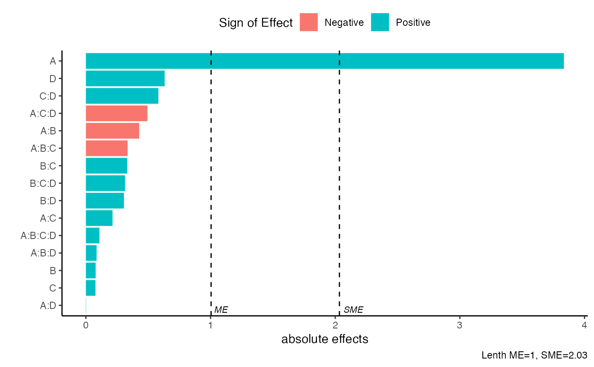
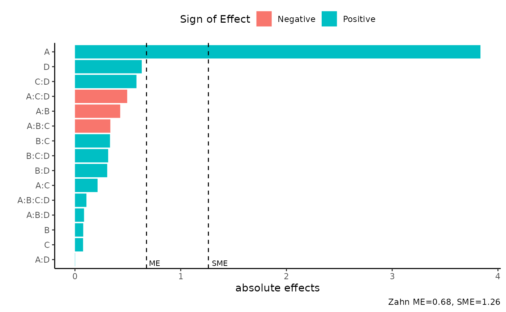
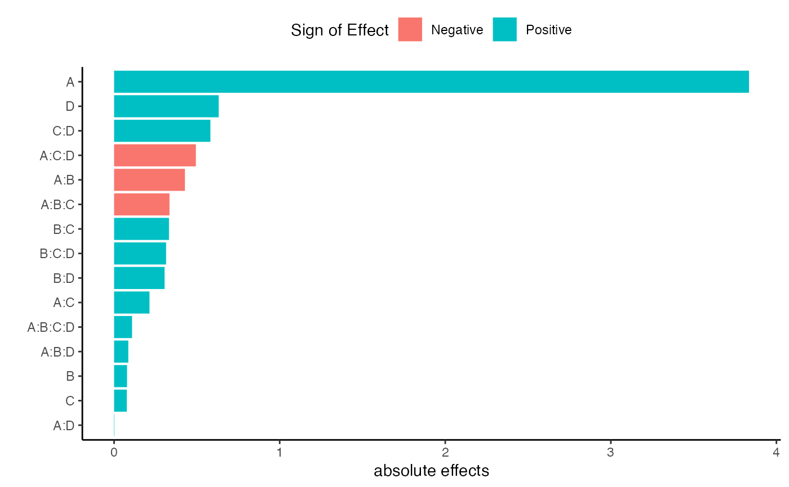

Pareto Plot of Effects
pareto_plot(
model,
alpha = 0.05,
method = "Lenth",
margin_errors = TRUE,
showplot = TRUE
)Model of class "lm"
specify the significance level to compute margin of errors. Numeric significance level, between 0 and 1. Default is alpha=0.05
Character value. Method to calculate PSE. Default is Lenth. Options include: Zahn, WZahn, Lenth, RMS, Dong, JuanPena, Daniel. See Details.
Default is TRUE, if false the cutoffs for margin of errors (ME) and simultaneous margin of error (SME) are not shown
Default is TRUE, if false plot will not be shown and a tibble is returned with data used to create the pareto plot
A bar plot with ordered effects, margin of error (ME) and simultaneous margin of error (SME) cutoffs.
The method argument is a simple wrapper for the function PSE() from the unrepx R package. For more details you can use ?unrepx::PSE(). The method arguement implements methods of estimating the standard error of effects estimates from unreplicatd designs. The methods include
Daniel: The 68.3rd quantile of the absolute effects. See Daniel (1959)
Dong: The RMS method, applied after excluding all effects that exceed 2.5 * PSE(effects, "SMedian") in absolute value. See Dong (1993)
JuanPena: An iterated median method whereby we repeatedly calculate the median of the absolute effects that don't exceed 3.5 times the previous median, until it stabilizes. The estimate is the final median, divided by .6578. See Juan and Pena (1992).
Lenth (Default): The SMedian method, applied after excluding all effects that exceed 2.5 * PSE(effects, "SMedian") in absolute value. See Lenth (1989)
RMS: Square root of the mean of the squared effects. This is not a good PSE in the presence of active effects, but it is provided for sake of comparisons
SMedian: 1.5 times the median of the absolute effects
Zahn, WZahn: The Zahn method is the slope of the least-squares line fitted to the first m points of unrepx::hnplot(effects, horiz = FALSE), where m = floor(.683 * length(effects)). (This line is fitted through the origin.) The WZahn method is an experimental version of Zahn's method, based on weighted least-squares with weights decreasing linearly from m - .5 to .5, but bounded above by .65m
Daniel, C (1959) Use of Half-Normal Plots in Interpreting Factorial Two-Level Experiments. Technometrics, 1(4), 311-341
Dong, F (1993) On the Identification of Active Contrasts in Unreplicated Fractional Factorials. Statistica Sinica 3, 209-217
Hamada and Balakrishnan (1998) Analyzing Unreplicated Factorial Experiments: A Review With Some New Proposals. Statistica Sinica 8, 1-41
Juan, J and Pena, D (1992) A Simple Method to Identify Significant Effects in Unreplicated Two-Level Factorial Designs. Communications in Statistics: Theory and Methods 21, 1383-1403
Lenth, R (1989) Quick and Easy Analysis of Unrelicated Factorials Technometrics 31(4), 469-473
Zahn, D (1975) Modifications of and Revised Critical Values for the Half-Normal Plot. Technometrics 17(2), 189-200
m1 <- lm(lns2 ~ (A+B+C+D)^4,data=original_epitaxial)
pareto_plot(m1)

pareto_plot(m1,method='Zahn',alpha=0.1)

pareto_plot(m1,margin_errors=FALSE)
